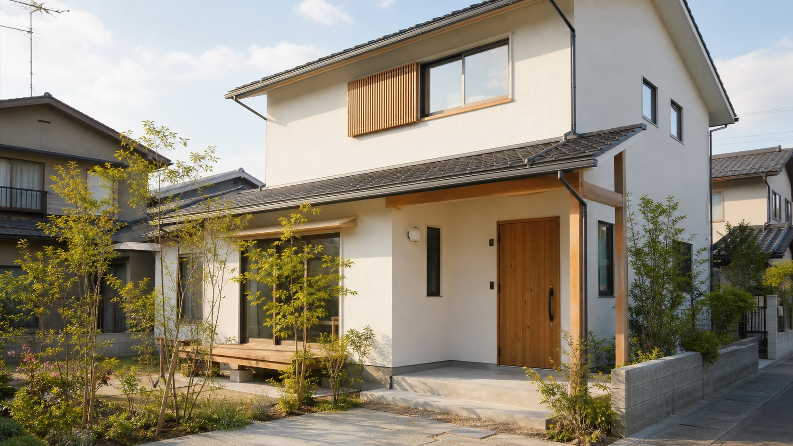
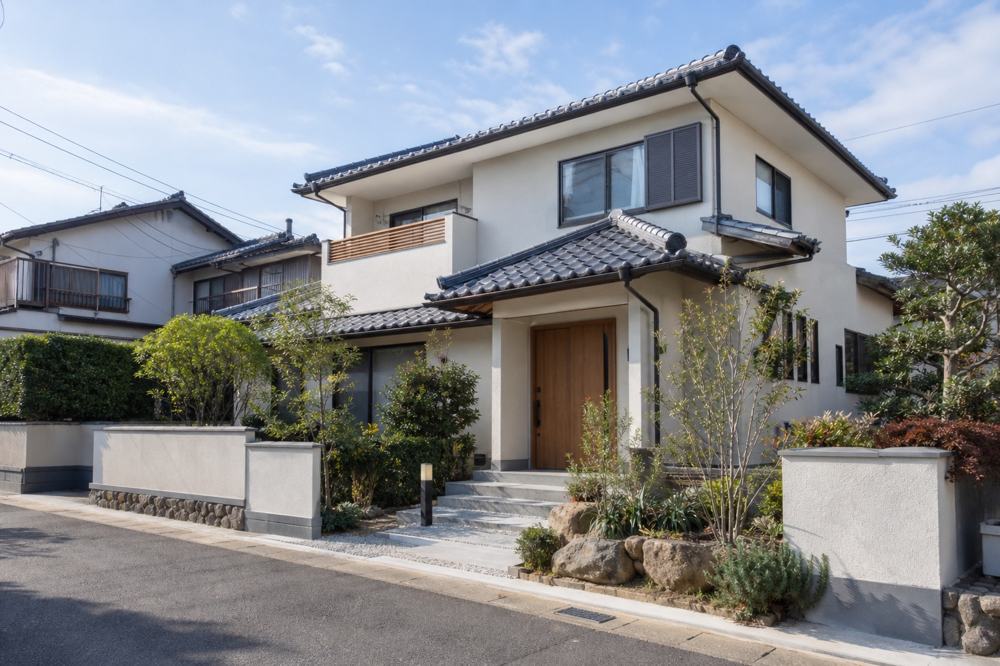
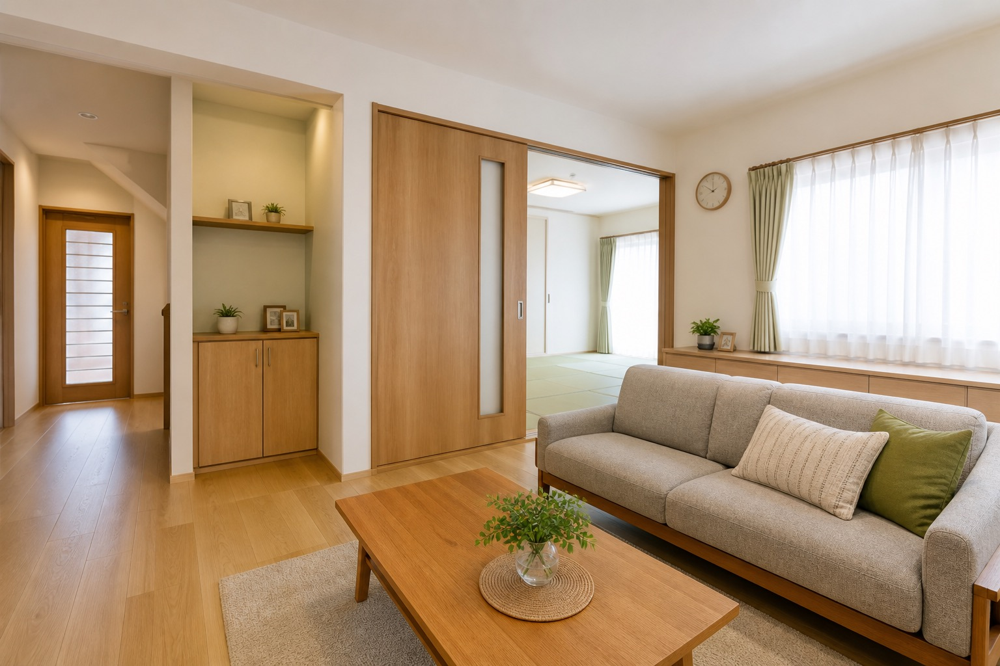
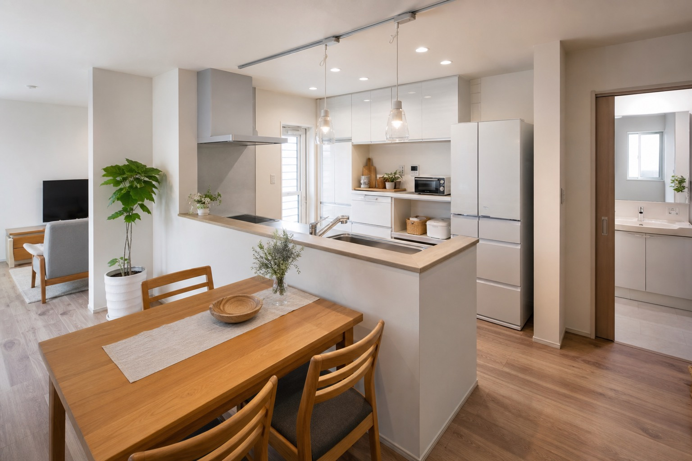

増改築・木工事
木材加工、増築、間取り変更、階段設置など、住まいの形を整える工事。
このページは営業提案用サンプルです。公式サイトではありません。

北九州の住宅リフォーム・増改築
牧野工務店の既存サイトにある「無駄を省き、より良いものを適正な費用で届ける」という考えを、見やすく、相談しやすい導線に整えた提案用デモです。
Concept

既存サイトでは、ホームページも自社で制作し、無駄を省く姿勢が語られています。その率直さを、営業提案用サイトでは「相談前に伝わる信頼感」として整理しました。
北九州市内の住まいの困りごとを、現地調査、見積もり、図面プランまで分かりやすく案内。工事発注の催促をしないという約束も、問い合わせ前の不安を減らす大切な情報として掲載しています。
Service
既存サイトのメニュー・施工例から確認できる範囲のみ掲載しています。
木材加工、増築、間取り変更、階段設置など、住まいの形を整える工事。
トイレ、キッチン、浴室、給湯器、エコキュートなどの交換・改修。
天井クロス、塗替え、外壁補修、外階段、外構、コンクリート工事。
MADOショップ関連、シャッター、サッシ、住設メーカー製品の相談導線。
Reason
Gallery
以下は仮画像です。実在する案件名・口コミ・実績数は作成していません。



Consultation
既存サイトでは住宅リフォーム補助金、MADOショップ関連キャンペーン、Tポイント告知、ショールームPDFへの導線が確認できます。公開前には最新情報へ更新し、古いキャンペーンは整理する想定です。
相談導線を見るCompany
Contact
工事発注の催促はしない、という既存サイトのお約束を目立つ位置へ。電話・メール・デモフォームの3つの導線で、相談までの迷いを減らします。
このフォームは営業提案用サンプルです。実際には送信されません。